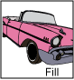
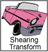
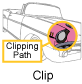

Lección: Vista general de los conceptos de la IPA Java 2D
Renderizado 2D en Java
La IPA de Java 2D proporciona un modelo de presentación uniforme entre diferentes tipos de dispositivos. En el
nivel de aplicación, el proceso de presentación es el mismo si el dispositivo de presentación destino es una
pantalla o una impresora. Cuando un componente necesita ser visualizado, su método paint o
update es invocado automáticamente con el contexto Graphics apropiado.
La IPA de Java 2D incluye la clase
java.awt.Graphics2D, que extiende la clase
Graphics para proporcionar acceso a los gráficos mejorados y capacidades de presentación de
la IPA de Java 2D. Estas características incluyen:
-
Representar el contorno de cualquier primitiva geométrica, utilizando los atributos de trazo y pintura
(método
draw). -
Representar cualquier primitiva geométrica llenando su interior con el color o patrón especificado por los
atributos de pintura. (método
fill). -
Representar cualquier cadena de texto (el método
drawString). El atributo de fuente se utiliza para convertir la cadena en glifos, que luego se rellenan con el color o patrón especificado por los atributos de pintura. -
Representar la imagen especificada (el método
drawImage).
Además, la clase Graphics2D admite los métodos de presentación de Graphics para
formas particulares, tales como drawOval y fillRect. Todos los métodos que están
representados arriva pueden ser divididos en dos grupos:
- Métodos para dibujar una forma
- Métodos que afectan la presentación
El segundo grupo de los métodos usa los atributos de estado que forman el contexto Graphics2D
para los propósitos siguientes:
- Para variar el ancho de traxo
- Para cambiar cómo se unen los trazos
- Para establecer un trazado de recorte para limitar el área que se renderiza
- Para trasladar, rotar, escalar o distorsionar objetos cuando se renderizan
- Para rellenar formas con colores y patrones que se definen
- Para especificar cómo componer varios objetos gráficos
Para emplear las características de la IPA de Java 2D en la aplicación, moldee el objeto Graphics
pasado en un método de presentación de componentes a un objeto Graphics2D. Por ejemplo:
public void paint (Graphics g) {
Graphics2D g2 = (Graphics2D) g;
...
}
Como la figura siguiente muestra, la clase Graphics2D del contexto de presentación contiene varios
atributos.

|
El atributo de la pluma se aplica al contorno de una forma. Este atributo de trazo le permite dibujar líneas con cualquier tamaño de punto y patrón de guiones y aplicar adornos finales y de unión a una línea. |
|  | El atributo de relleno se aplica al interior de una forma. Este atributo de pintura le permite rellenar formas con colores sólidos, degradados y patrones. |
| El atributo de composición se usa cuando los objetos renderizados se superponen a los objetos existentes. | |
|  | El atributo de transformación se aplica durante la presentación para convertir el objeto presentado del espacio de usuario a las coordenadas de espacio del dispositivo. Las transformaciones opcionales de traslación, rotación, escala o corte también se pueden aplicar a través de este atributo. |
|  |
El tipo clip restringe el renderizado al área dentro del contorno del objeto
Shape usado para definir la ruta de recorte. Cualquier objeto Shape que se
utilice para definir el clip.
|

|
El atributo font se usa para convertir cadenas de textos en glifos. |

|
Las sugerencias de reproducción especifican preferencias en las compensaciones entre velocidad y calidad. Por ejemplo, puede especificar si se debe utilizar el antialiasing, si esta función está disponible. Consulte también Control de la calidad de la reproducción . |
Para aprender más sobre transformación y composición vea la lección Temas Avanzados en Java2D.
Cuando se establece un atributo, se pasa el atributo de objeto apropiado. Como el siguiente ejemplo muestra,
para cambiar el atributo de pintado a un relleno con gradiente azul-verde, construye un objeto
GradientPaint y después llama al método setPaint.
gp = new GradientPaint(0f,0f,blue,0f,30f,green);
g2.setPaint(gp);